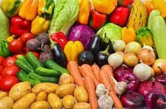

Pourquoi mettre l'accent sur des aliments locaux et saisonniers :
EN 8 MOTS : suivre le rythme de la nature est essentiel.
1.Les produits de saison, priorisez-les. 2.Auprès des producteurs locaux bio, consommez vos aliments pour manger local. 3.Cultiver un potager dans le jardin. 4.Les produits de magasins bio, privilégiez-les. 5.Les étiquettes, vérifiez-les pour manger local.